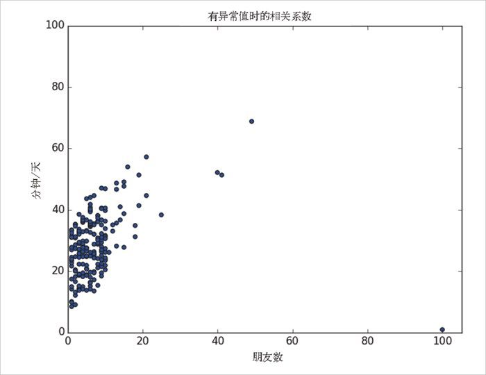
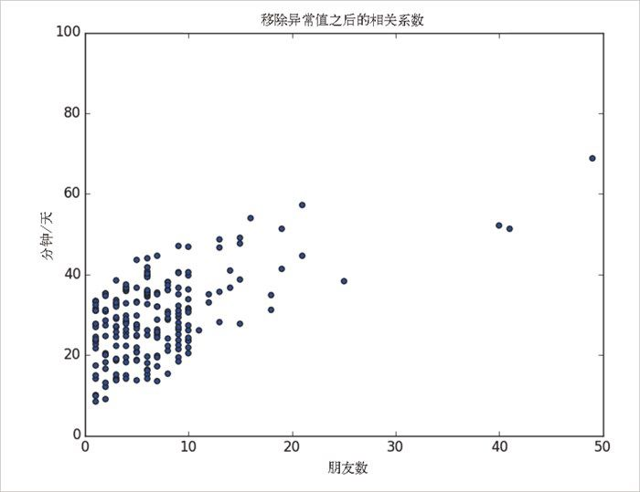

5.2 相关
DataSciencester 战略发展部的副总持有这样一种想法，即用户在某个网站上花费的时间与其在这个网站上拥有的朋友数相关（他并不是一个无所事事的领导）。现在，他要求你来验证这个想法。
通过分析研究流量日志，你设法做出了一个 daily_minutes 列表，这个列表描述了每个用户每天在 DataSciencester 花费了多长时间。你还对这个列表排了序，使它的元素和你之前的列表 num_friends 的元素对应了起来，以便进一步研究两个度量之间的关系。
我们先来看一下协方差 （covariance），这个概念是方差的一个对应词。方差衡量了单个变量对均值的偏离程度，而协方差衡量了两个变量对均值的串联偏离程度：
def covariance(x, y):
n = len(x)
return dot(de_mean(x), de_mean(y)) / (n - 1)
covariance(num_friends, daily_minutes) # 22.43
回想一下点乘（dot）的概念，它意味着对应的元素对相乘后再求和。如果向量 x 和向量 y 的对应元素同时大于它们自身序列的均值，或者同时小于它们自身序列的均值，那将为求和贡献一个正值。如果其中一个元素大于自身的均值，而另一个小于自身的均值，那将为求和贡献一个负值。因此，如果协方差是一个大的正数，就意味着如果 y 很大，那么 x 也很大，或者如果 y 很小，那么 x 也很小。如果协方差为负而且绝对值很大，就意味着 x 和 y 一个很大，而另一个很小。接近零的协方差意味着以上关系都不存在。
但是，这个数字很难解释，原因如下。
它的单位是输入单位的乘积（即朋友 - 分钟 - 每天），难于理解。（“朋友 - 分钟 - 每天”是什么鬼？）
如果每个用户的朋友数增加到两倍（但分钟数不变），方差会增加至两倍。但从某种意义上讲，变量的相关度是一样的。换句话讲，很难说“大”的协方差意味着什么。
因此，相关 是更常受到重视的概念，它是由协方差除以两个变量的标准差：
def correlation(x, y):
stdev_x = standard_deviation(x)
stdev_y = standard_deviation(y)
if stdev_x > 0 and stdev_y > 0:
return covariance(x, y) / stdev_x / stdev_y
else:
return 0 # 如果没有变动，相关系数为零
correlation(num_friends, daily_minutes) # 0.25
相关系数没有单位，它的取值在 -1（完全反相关）和 1（完全相关）之间。相关值 0.25 代表一个相对较弱的正相关。
但是，我们忽略了对数据的检查。看图 5-2。

图 5-2：有异常值时的相关系数
图中那个有 100 个朋友的用户（每天只在网上花费 1 分钟）是一个明显的异常值，相关系数的计算对异常值非常敏感。如果我们计算时希望忽略这个人，该怎么做呢？如下所示：
outlier = num_friends.index(100) # outlier的索引
num_friends_good = [x
for i, x in enumerate(num_friends)
if i != outlier]
daily_minutes_good = [x
for i, x in enumerate(daily_minutes)
if i != outlier]
correlation(num_friends_good, daily_minutes_good) # 0.57
排除了这个异常值，相关性明显增强了（见图 5-3）。

图 5-3：移除异常值之后的相关系数
通过进一步调查，你发现这个异常值实际上仅仅是一个内部测试 账号，因而没人对移除它有异议。这样你就可以理直气壮地删除它了。